Miguel@localhost:8080
Miguel Rocha
Estudante de Java, conhecimentos em Python e estudante de Desenvolvimento de
Sistemas na Escola SESI de Referência.

{Sobre Mim}
Descrição
Clique em alguma das principais tecnologias no painel para ler uma breve descrição sobre seu funcionamento e utilização.


{Projetos}
Python + Framework
Notion Tkinter - cronograma de atividades
Projeto de cronograma em Python inspirado no Notion. Organize tarefas com
prioridades, status e datas em uma interface simples via terminal. Open-source e
extensível!